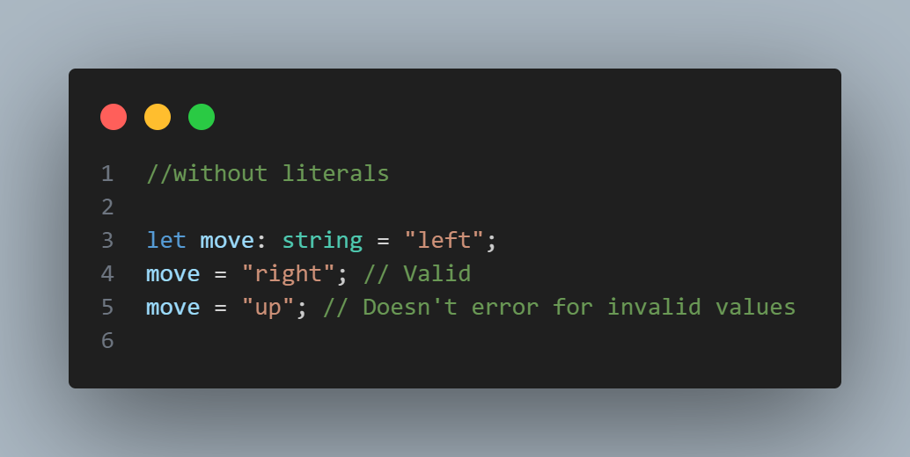
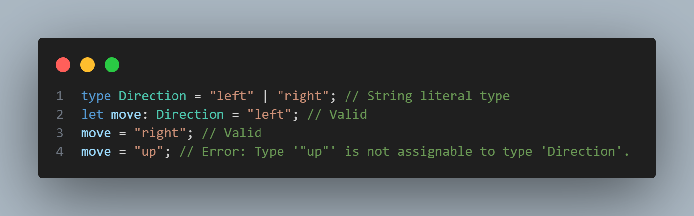

Literals
What are Literals?:
In TypeScript, literals refer to specific values that can be assigned to a variable. These can be:
- String literals: A variable can only have specific string values.
- Numeric literals: A variable can only have specific numeric values.
- Boolean literals: A variable can only have true or false.
Use Case:
Let's say we have a situation where we have a variable called direction that accepts "left" and "right". we can give core type "string" as a type for example

Problems:
A disadvantage of using core types in TypeScript (like string, number, boolean) is that they are too general, leading to potential errors when more specific values are expected.
Solution: Literals

Conclusion:
Literals restrict variables to specific values..